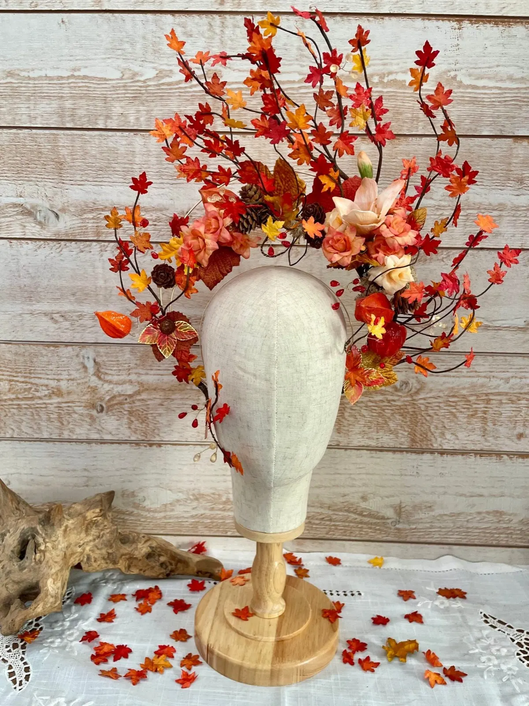
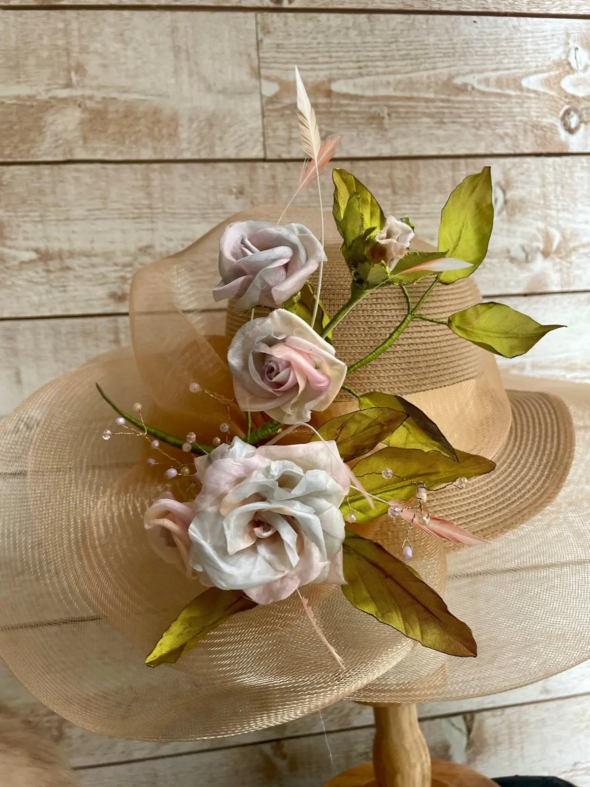
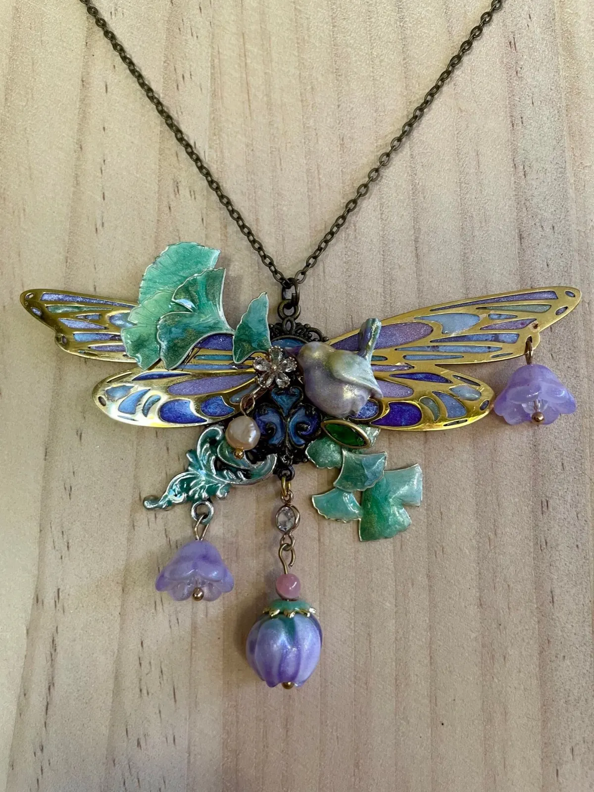
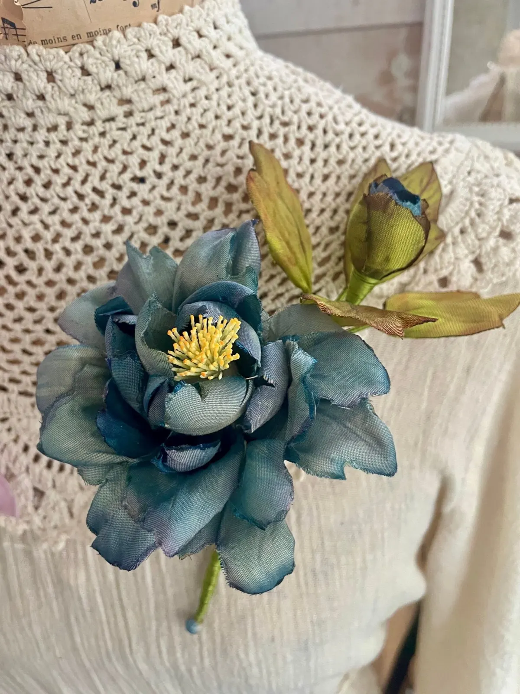
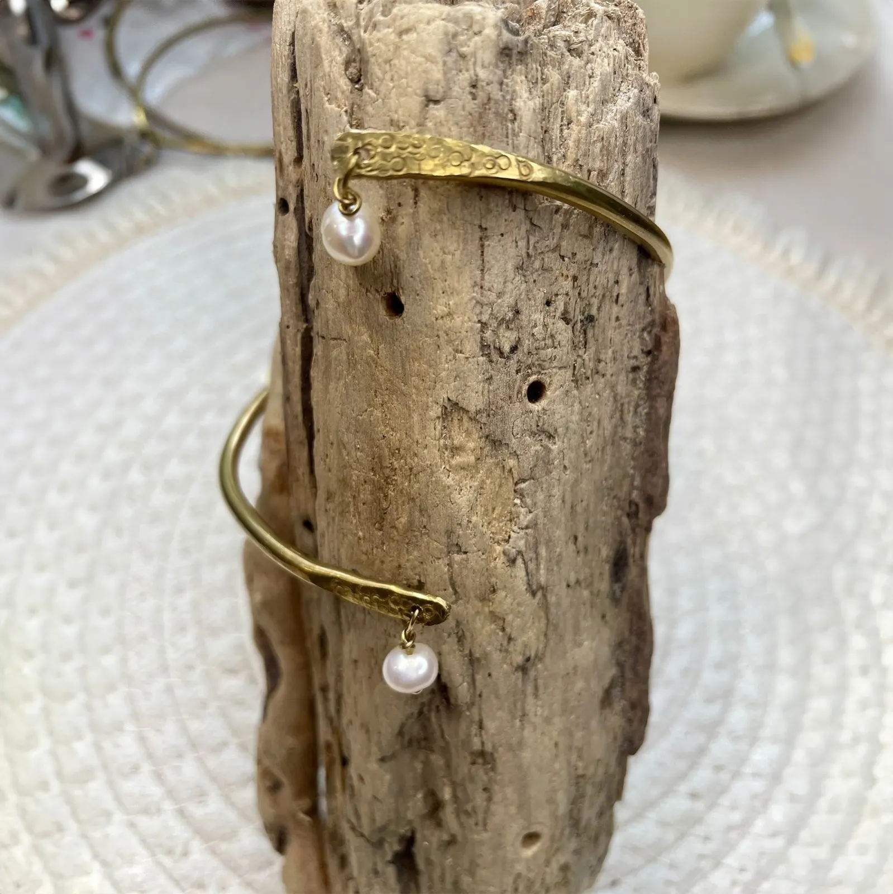
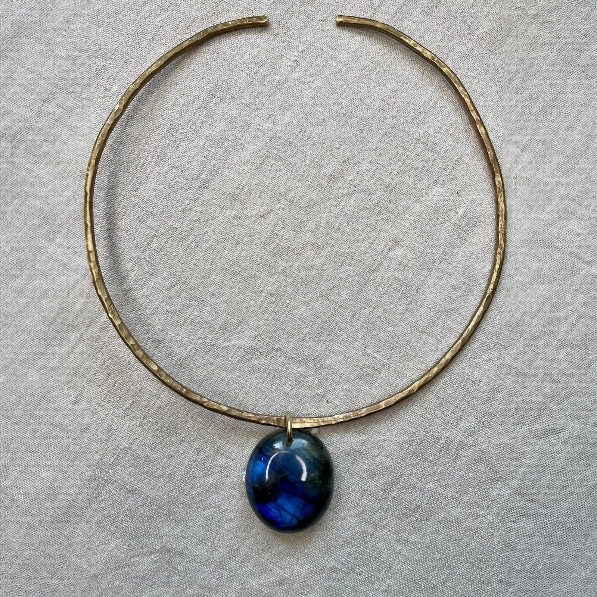
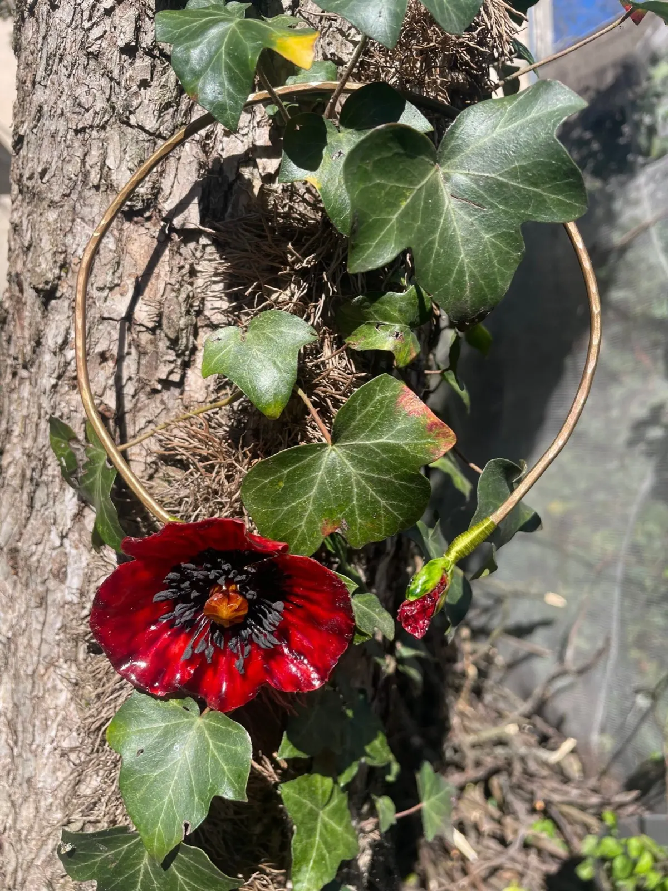
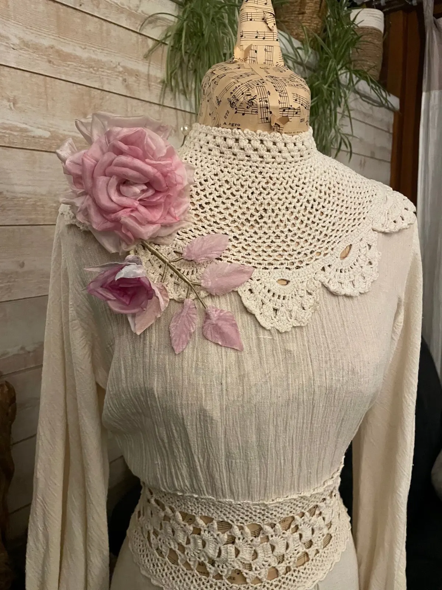
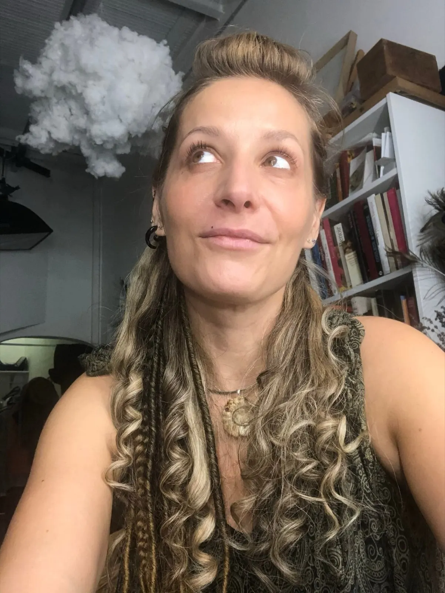
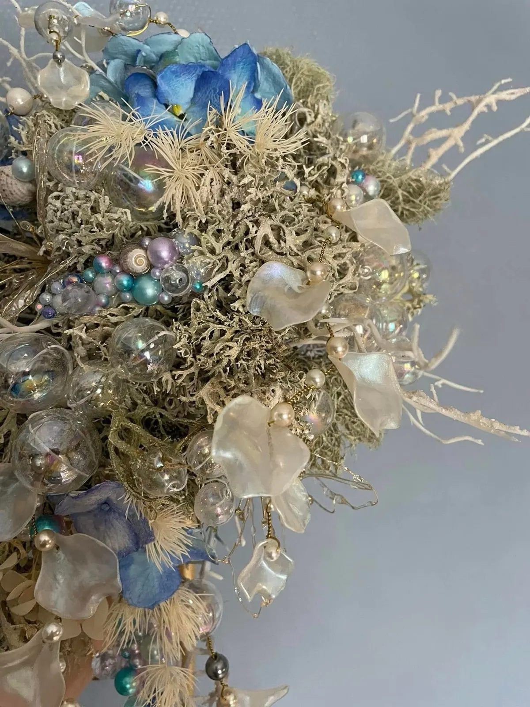

Bienvenue dans l'univers de L'Avantarium
Où l'artisanat s'exprime avec passion
Bijoux, fleurs et objets de décoration, façonnés avec amour pour sublimer vos instants de vie, du quotidien aux évènements magiques.

- Créations faites main, uniques et garanties
- Fleurs en soie et étoffes précieuses
- Bijoux en laiton martelé
- Création sur mesure
- En Dordogne
Des créations uniques
L'Avantarium est né d'une passion : offrir des créations artisanales uniques, à la fois élégantes et pleines d'âme. Chaque bijou, chaque composition florale, chaque décor est conçu à la main, avec une sensibilité artistique, qu'il s'agisse d'un mariage, d'un cadeau personnel ou d'une touche déco au quotidien.

Chapeau « Clothilde » 140 €



Torque et labradorite 60 €
Bijoux laiton, boucles d'oreilles, broches, colliers, parures de cheveux, mariage et décoration : toutes les créations sont dans la boutique.

Broche « Ronsard » 95 €La parurerie florale, cet art délicat qui consiste à créer des fleurs avec de la soie et des étoffes précieuses.
Un art découvert dans un atelier de costumes parisien
- Fleur de magnoliaPorcelaine froide sculptée8 h
- Chapeau « Clothilde »Voile, taffetas et fil de soie6 h 40
- Broche « Ronsard »Voile, velours et fil de soie5 h 40
- Collier PragueAiles façon vitrail, oiseau sculpté5 h 20
Le temps de travail d'une seule pièce, tel qu'il est noté sur chaque création.
À propos de moi
Après un CAP puis un BP de fleuriste, j'ai intégré une école de maquillage artistique et de coiffure, où je me suis spécialisée dans la mise en beauté d'époque. Cela m'a conduite à travailler dans un atelier de costumes parisien, où j'ai découvert la parurerie florale.
Quelques années plus tard, j'ai ouvert ma propre boutique dans les Cévennes, un véritable cabinet de curiosités empli de trésors et de pièces uniques. L'aventure a duré deux belles années, avant que le vent de la vie ne m'emporte jusqu'en Dordogne.
L'Avantarium : le temps qui passe, « Avant », et les mondes imaginaires que j'affectionne, « arium », en clin d'œil à L'Imaginarium du Docteur Parnassus.

Pourquoi choisir L'Avantarium ?
Création artisanale
Créations faites main, uniques et garanties.
Création sur mesure
Adaptée à votre style ou votre événement.
Savoir-faire engagé
Matériaux de qualité, démarche responsable, attention portée à chaque détail.
Artisanat d'art
Un savoir-faire unique pour des pièces d'exception.
Commandes personnalisées
Chaque création de L'Avantarium est pensée comme une œuvre unique, façonnée avec soin et poésie. Si un modèle vous plaît, sachez qu'il peut devenir le vôtre : adapté, transformé, réinventé selon vos envies.

Fleurs séchées, perles et bulles de verreChanger une pierre
Une pierre porte-bonheur, une pierre qui porte une histoire ou des souvenirs, à monter sur un torque en laiton martelé simple ou en plusieurs parties.
Modifier une couleur
Un modèle vous plaît beaucoup mais vous l'apprécieriez encore plus dans d'autres coloris ? Camaïeu, couleurs plus vives, voyons ensemble les possibilités.
Ajouter un détail
Un petit pendentif fétiche, un objet qui vous tient à cœur, une breloque ou une perle à porter sur l'une des créations.
Son propre style
Vous avez un collier, un sac, une tenue et vous souhaiteriez un bijou ou une création pour pouvoir tout coordonner.
Mariages, évènements et ateliers
À journée extraordinaire, créations extraordinaires. Un bijou de mariée, des boutonnières, un bouquet éternel original et unique, une création pour une communion ou un baptême : imaginons cela ensemble.
Un enterrement de vie de jeune fille, un anniversaire, ou simplement un après-midi entre amis à créer vos propres objets dans un cadre agréable et calme ? C'est possible.
Une création qui raconte votre histoire
Un compagnon à quatre pattes auquel vous souhaiteriez rendre hommage, une mèche de cheveux à transformer en un bijou unique, quelques fleurs séchées de votre bouquet de mariée à préserver. Chaque commande personnalisée est une rencontre, une collaboration où vos idées prennent forme entre mes mains.
Un projet en tête ? Écrivez-moi :
lavantarium@gmail.comQuestions et réponses
Une question sur une création en ligne ? N'hésitez pas à me contacter.
Quel prix ?
Vous vous interrogez sur le prix d'une création en ligne ou avez un projet en tête : contactez-moi et j'établirai un devis.
Combien de temps ?
Vous avez un projet, un évènement et vous souhaiteriez commander une création ? Voyons ensemble les possibilités adaptées à vos délais et contraintes.
Personnalisable ?
Impératifs de temps, budget, envies, projet complètement fou : tout est possible à condition de bien poser les choses et de communiquer. Ensemble, trouvons des idées et des solutions pour donner vie à vos souhaits.
Remboursement ?
Un article ne vous convient pas ? Vous avez 10 jours pour changer d'avis.